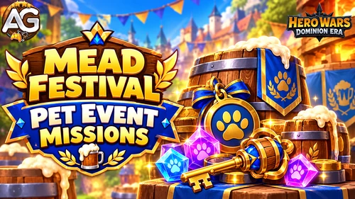

Mead Festival combines event missions, the Guild Barrel, Barrel Keys, Asgard Mead, and a festival shop in Hero Wars: Dominion Era. This guide explains missions and resource planning for returning editions, including those connected to a featured pet.
The featured rewards and mission requirements can change. A pet launch may include its own upgrade quests, while a later festival may focus on other resources. Always use the edition listed below when checking exact targets.

Event Edition and Schedule
Latest listed edition: November 9–15, 2026, lasting seven days. You can also check the Dominion Era event calendar for the festival alongside other events.
This edition lists 97 milestones across 10 mission categories. Its targets include seven logins, 60 Explorer's Moves, 450 Outland chests, and 80 completed festival quests. These differ from the first pet-launch edition.
Mission Overview
Each number is a cumulative milestone within its own counter. For example, an Emerald target of 180,000 means 180,000 total, rather than the sum of every row.
| Mission | Milestones | Final listed requirement |
|---|---|---|
| A Regular's Routine | 7 | Log in 7 times during a special event |
| Crowd Favorite | 12 | Get 9,000 VIP points |
| A Generous Soul | 13 | Spend 180,000 Emeralds |
| Frothy Charge | 9 | Spend 15,000 Energy |
| In Search of Gold | 10 | Spend 60 Explorer's Moves |
| One More Round | 9 | Open 450 chests in Outlands |
| Tasting | 11 | Spend 170,000 Barrel Keys |
| Foam Party | 14 | Complete 80 quests of the "Mead Festival" special event. |
| Hero Upgrade Tasks | 6 | Unlock an Ascension glyph in the Ascension Spire 9 times |
| Titan Upgrade Tasks | 6 | Complete 50 summons in the Summoning Circle! |
The hero and titan upgrade categories contain several different task types. Their final rows do not replace the other requirements; see the full sequence below.
Mead Festival Mission Milestones
Reward amounts remain marked as Not yet confirmed where they have not been announced.
A Regular's Routine
| Stage | Requirement | Reward |
|---|---|---|
| 1 | Log in 1 time during a special event | Not yet confirmed |
| 2 | Log in 2 times during a special event | Not yet confirmed |
| 3 | Log in 3 times during a special event | Not yet confirmed |
| 4 | Log in 4 times during a special event | Not yet confirmed |
| 5 | Log in 5 times during a special event | Not yet confirmed |
| 6 | Log in 6 times during a special event | Not yet confirmed |
| 7 | Log in 7 times during a special event | Not yet confirmed |
Crowd Favorite
| Stage | Requirement | Reward |
|---|---|---|
| 1 | Get 50 VIP points | Not yet confirmed |
| 2 | Get 100 VIP points | Not yet confirmed |
| 3 | Get 300 VIP points | Not yet confirmed |
| 4 | Get 600 VIP points | Not yet confirmed |
| 5 | Get 1,000 VIP points | Not yet confirmed |
| 6 | Get 1,500 VIP points | Not yet confirmed |
| 7 | Get 2,000 VIP points | Not yet confirmed |
| 8 | Get 3,000 VIP points | Not yet confirmed |
| 9 | Get 4,500 VIP points | Not yet confirmed |
| 10 | Get 6,000 VIP points | Not yet confirmed |
| 11 | Get 7,500 VIP points | Not yet confirmed |
| 12 | Get 9,000 VIP points | Not yet confirmed |
A Generous Soul
| Stage | Requirement | Reward |
|---|---|---|
| 1 | Spend 2,500 Emeralds | Not yet confirmed |
| 2 | Spend 6,000 Emeralds | Not yet confirmed |
| 3 | Spend 12,000 Emeralds | Not yet confirmed |
| 4 | Spend 18,000 Emeralds | Not yet confirmed |
| 5 | Spend 25,000 Emeralds | Not yet confirmed |
| 6 | Spend 35,000 Emeralds | Not yet confirmed |
| 7 | Spend 50,000 Emeralds | Not yet confirmed |
| 8 | Spend 65,000 Emeralds | Not yet confirmed |
| 9 | Spend 80,000 Emeralds | Not yet confirmed |
| 10 | Spend 100,000 Emeralds | Not yet confirmed |
| 11 | Spend 120,000 Emeralds | Not yet confirmed |
| 12 | Spend 150,000 Emeralds | Not yet confirmed |
| 13 | Spend 180,000 Emeralds | Not yet confirmed |
Frothy Charge
| Stage | Requirement | Reward |
|---|---|---|
| 1 | Spend 500 Energy | Not yet confirmed |
| 2 | Spend 1,000 Energy | Not yet confirmed |
| 3 | Spend 2,000 Energy | Not yet confirmed |
| 4 | Spend 3,000 Energy | Not yet confirmed |
| 5 | Spend 5,000 Energy | Not yet confirmed |
| 6 | Spend 7,500 Energy | Not yet confirmed |
| 7 | Spend 10,000 Energy | Not yet confirmed |
| 8 | Spend 12,500 Energy | Not yet confirmed |
| 9 | Spend 15,000 Energy | Not yet confirmed |
In Search of Gold
| Stage | Requirement | Reward |
|---|---|---|
| 1 | Spend 2 Explorer's Moves | Not yet confirmed |
| 2 | Spend 5 Explorer's Moves | Not yet confirmed |
| 3 | Spend 7 Explorer's Moves | Not yet confirmed |
| 4 | Spend 10 Explorer's Moves | Not yet confirmed |
| 5 | Spend 15 Explorer's Moves | Not yet confirmed |
| 6 | Spend 20 Explorer's Moves | Not yet confirmed |
| 7 | Spend 30 Explorer's Moves | Not yet confirmed |
| 8 | Spend 40 Explorer's Moves | Not yet confirmed |
| 9 | Spend 50 Explorer's Moves | Not yet confirmed |
| 10 | Spend 60 Explorer's Moves | Not yet confirmed |
One More Round
| Stage | Requirement | Reward |
|---|---|---|
| 1 | Open 20 chests in Outlands | Not yet confirmed |
| 2 | Open 40 chests in Outlands | Not yet confirmed |
| 3 | Open 60 chests in Outlands | Not yet confirmed |
| 4 | Open 80 chests in Outlands | Not yet confirmed |
| 5 | Open 100 chests in Outlands | Not yet confirmed |
| 6 | Open 150 chests in Outlands | Not yet confirmed |
| 7 | Open 250 chests in Outlands | Not yet confirmed |
| 8 | Open 350 chests in Outlands | Not yet confirmed |
| 9 | Open 450 chests in Outlands | Not yet confirmed |
Tasting
| Stage | Requirement | Reward |
|---|---|---|
| 1 | Spend 1,000 Barrel Keys | Not yet confirmed |
| 2 | Spend 5,000 Barrel Keys | Not yet confirmed |
| 3 | Spend 10,000 Barrel Keys | Not yet confirmed |
| 4 | Spend 20,000 Barrel Keys | Not yet confirmed |
| 5 | Spend 30,000 Barrel Keys | Not yet confirmed |
| 6 | Spend 40,000 Barrel Keys | Not yet confirmed |
| 7 | Spend 60,000 Barrel Keys | Not yet confirmed |
| 8 | Spend 80,000 Barrel Keys | Not yet confirmed |
| 9 | Spend 100,000 Barrel Keys | Not yet confirmed |
| 10 | Spend 130,000 Barrel Keys | Not yet confirmed |
| 11 | Spend 170,000 Barrel Keys | Not yet confirmed |
Foam Party
Follow the festival quest counter to see which completed objectives count toward Foam Party.
| Stage | Requirement | Reward |
|---|---|---|
| 1 | Complete 2 quests of the "Mead Festival" special event. | Not yet confirmed |
| 2 | Complete 5 quests of the "Mead Festival" special event. | Not yet confirmed |
| 3 | Complete 10 quests of the "Mead Festival" special event. | Not yet confirmed |
| 4 | Complete 15 quests of the "Mead Festival" special event. | Not yet confirmed |
| 5 | Complete 20 quests of the "Mead Festival" special event. | Not yet confirmed |
| 6 | Complete 25 quests of the "Mead Festival" special event. | Not yet confirmed |
| 7 | Complete 30 quests of the "Mead Festival" special event. | Not yet confirmed |
| 8 | Complete 35 quests of the "Mead Festival" special event. | Not yet confirmed |
| 9 | Complete 40 quests of the "Mead Festival" special event. | Not yet confirmed |
| 10 | Complete 45 quests of the "Mead Festival" special event. | Not yet confirmed |
| 11 | Complete 50 quests of the "Mead Festival" special event. | Not yet confirmed |
| 12 | Complete 60 quests of the "Mead Festival" special event. | Not yet confirmed |
| 13 | Complete 70 quests of the "Mead Festival" special event. | Not yet confirmed |
| 14 | Complete 80 quests of the "Mead Festival" special event. | Not yet confirmed |
Hero Upgrade Tasks
This descriptive heading groups the listed upgrade objectives. Follow each task and its counter in the event screen.
| Stage | Requirement | Reward |
|---|---|---|
| 1 | Upgrade any hero's skin 10 times | Not yet confirmed |
| 2 | Level up any Hero's Artifact 20 times | Not yet confirmed |
| 3 | Unlock an Ascension glyph in the Ascension Spire 3 times | Not yet confirmed |
| 4 | Upgrade any hero's skin 40 times | Not yet confirmed |
| 5 | Level up any Hero's Artifact 80 times | Not yet confirmed |
| 6 | Unlock an Ascension glyph in the Ascension Spire 9 times | Not yet confirmed |
Titan Upgrade Tasks
This descriptive heading groups the listed upgrade objectives. Follow each task and its counter in the event screen.
| Stage | Requirement | Reward |
|---|---|---|
| 1 | Upgrade any titan's skin 5 times | Not yet confirmed |
| 2 | Level up any Titan Artifact 20 times | Not yet confirmed |
| 3 | Complete 10 summons in the Summoning Circle! | Not yet confirmed |
| 4 | Upgrade any titan's skin 20 times | Not yet confirmed |
| 5 | Level up any Titan Artifact 80 times | Not yet confirmed |
| 6 | Complete 50 summons in the Summoning Circle! | Not yet confirmed |
Barrel Keys and the Guild Barrel
Barrel Keys are used for barrel openings and lower generator levels. Asgard Mead is a separate resource used for higher generator levels and shop purchases.
For the November edition, one Guild Barrel opening costs 1,000 Barrel Keys. The last Tasting milestone requires 170,000 keys, equivalent to 170 openings.
| Possible reward | Quantity | Listed chance |
|---|---|---|
| Asgard Mead | 1 | 10% |
| Wish Insignia | 20 | 20% |
| Wish Crystal | 30 | 20% |
| Flawless Artifact Chest | 5 | 20% |
| Great Enchantment Runes | 5 | 15% |
| Skin Stone Chests | 40 | 15% |
Barrel openings also contribute to the guild's pass progress. Personal and guild contribution rankings provide additional rewards. This edition lists bad-luck protection for Mead drops; the displayed base chance should not be treated as a guaranteed result for any fixed number of openings.
Shop, Pass, and Leftover Resources
Spend Asgard Mead on the rewards that help your account. Compare the shop offer you want with the generator's next requirement before choosing where to use it. Pet Soul Stone offers from a launch edition should not be assumed to return with the same quantities or prices.
The Guild Barrel pass has free and paid reward tracks. In the listed November progression, level 30 requires 29,000 Barrel Keys in total. The repeatable level 31 starts at 30,000 keys, with each further repeat costing 1,000 keys. Immediate ticket-purchase rewards and the ticket price are not yet confirmed.
| Resource | Listed conversion |
|---|---|
| 1,000 Barrel Keys | 1 Harunian Chest |
| 1 Asgard Mead | 10 Harunian Chests |
The shop is listed to remain open for one day after this edition ends. Use the in-game shop timer for the exact deadline. Conversion rules and shop windows should be checked again for later editions.
Pets and Future Mead Festival Editions
A festival can be associated with a pet without making every future edition a release event for that same pet. The first Robin edition included pet-specific star, level, and rank objectives, plus a Pet Soul Stone collection category. Those four categories are not listed for the November edition shown above.
If a later edition features another pet, check that edition's upgrade targets, Soul Stone sources, and barrel rewards. A previous pet's reward quantities and upgrade costs may not apply.
For pet skills and builds, use the separate Robin pet guide. The festival guide focuses on event progress and resource planning.
Plan Your Mission Progress
- Log in throughout the event: the listed edition has seven login milestones.
- Choose your next target: compare your progress with the next Energy, Emerald, Outland, or Explorer's Move requirement before spending.
- Keep the currencies separate: Barrel Keys pay for openings; Asgard Mead has its own generator and shop uses.
- Check overlapping objectives: hero and titan upgrade tasks may fit upgrades you already planned. The calendar helps you compare festival dates with other events.
- Use the quest counters: check Foam Party and pass progress after completing tasks or opening the barrel.
- Set a resource limit: a final milestone is a target, not proof that reaching it is the best investment for your account.
Mead Festival FAQ
Is this guide only for Robin?
No. This is the general Mead Festival guide for returning editions. A featured pet's missions and rewards depend on the edition.
When is the next listed Mead Festival?
The latest schedule covered here is November 9–15, 2026. Check the event calendar and in-game timer for changes.
Are all mission rewards confirmed?
The 97 milestone requirements for the listed edition are available, but their individual reward amounts are not yet confirmed.
Does the barrel always drop Pet Soul Stones?
No. The November drop list above contains different resources. Use the reward list for the edition you are playing.
How many Barrel Keys are needed for the final Tasting milestone?
The listed November target is 170,000 keys, or 170 openings at 1,000 keys each.
Will the same missions and conversion rules apply next time?
They can change between editions. The exact requirements, drops, and conversion figures shown here describe the November 2026 edition.